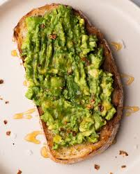

Avocado Toast recipe

Description
Avocado toast is creamy, crisp and so satisfying. It's a delicious and simple breakfast, snack or light meal!
It's best consumed immediately, since the avocado browns over time.
Ingredients
- 2 slices whole grain bread
- ½ avocado
- 2 tablespoons chopped fresh cilantro, or more to taste
- 1 teaspoon Meyer lemon juice, or to taste
- ¼ teaspoon Meyer lemon zest
- 1 pinch cayenne pepper
- 1 pinch fine sea salt
Steps
- Step 1
- Toast bread slices to desired doneness, 3 to 5 minutes.
- Step 2
- Mash avocado in a bowl; stir in cilantro, Meyer lemon juice, Meyer lemon zest, cayenne pepper, and
sea salt. Spread avocado mixture onto toast and top with chia seeds.